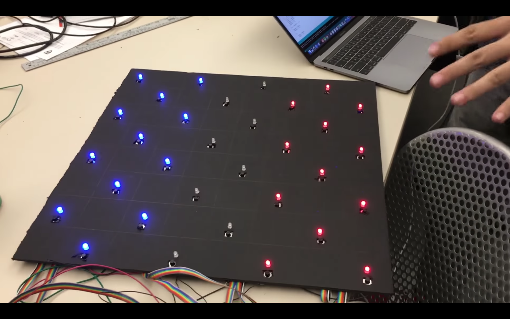

Description: Electronic implementation of the game checkers using push buttons, LEDs, resistors, shift registers and a microcontroller
Date: Fall 2016
Location: Harvard
Software, Tools, Equipment: Arduino C, Breadboarding
Contributers: Billy Koech, Victor Yang, Ryan Wood, Sean Park



Overview
This is an electronic checkerboard controlled using an Arduino microcontroller and powered using a single 9V battery. It allows two users to play the game of checkers, much like you would on a normal cardboard board. Each of 32 squares on the board contains an RGB LED and a push button to dictate to the board which piece to move and where. These two elements are wired through different circuits. Due to limits on the number of pins on the Arduino, creativity was used to control all 32 LEDs and push buttons. For the LEDs, two sets of four daisy-chained SN74HC595 shift registers write a 32-bit binary number to the board, where each bit controls the LED for one square, and the two sets of shift registers control red and blue colors for each player. For the push buttons, 8 of them are connected in series, with one side of the buttons shorted (connected to one Arduino analog input pin) and the other side containing a 2.2k Ohm resistor between each button (connected to power)2. In this way, when power is on and a button is pressed, each button opens a circuit with a different amount of resistance, causing a different voltage to be read by the Arduino. The problem with this idea is that two buttons cannot be pressed at the same time, but that should never happen in a checkers game.